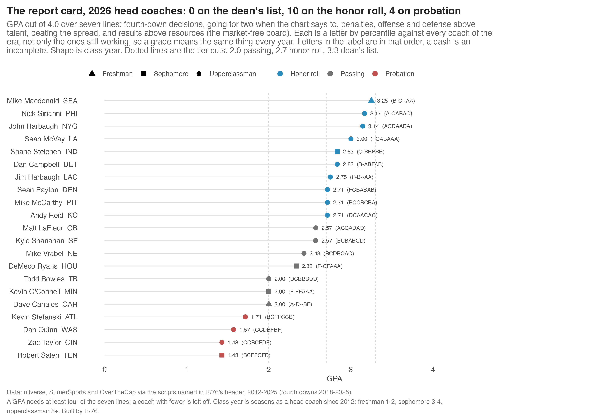
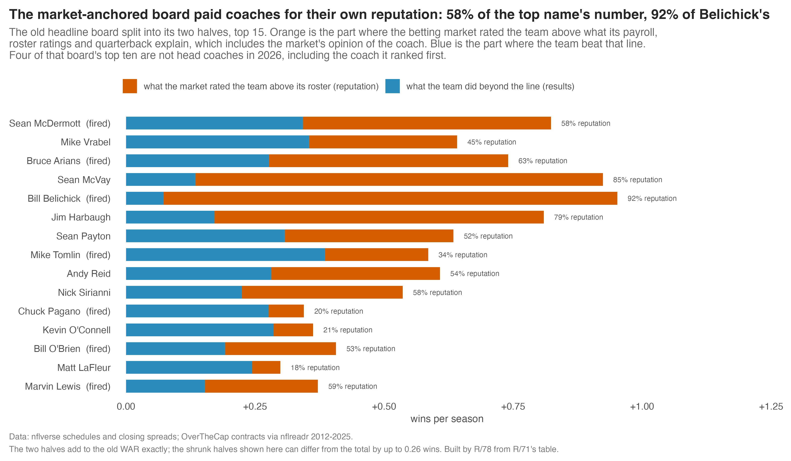
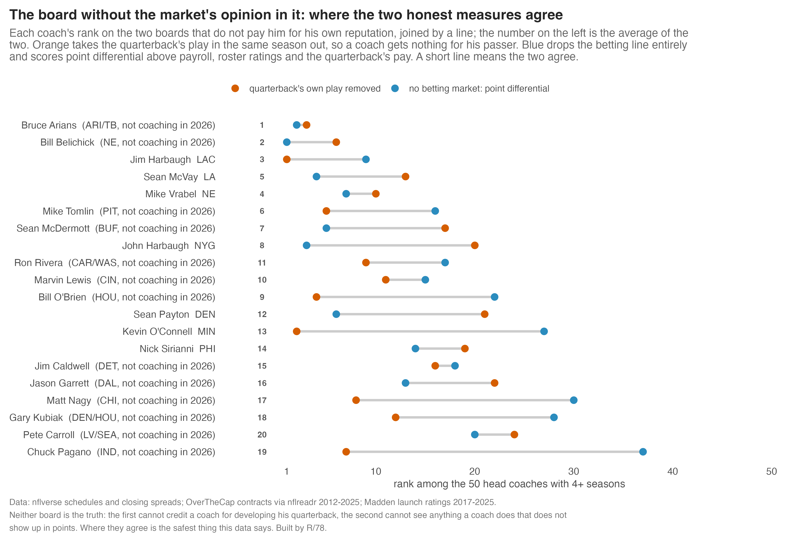
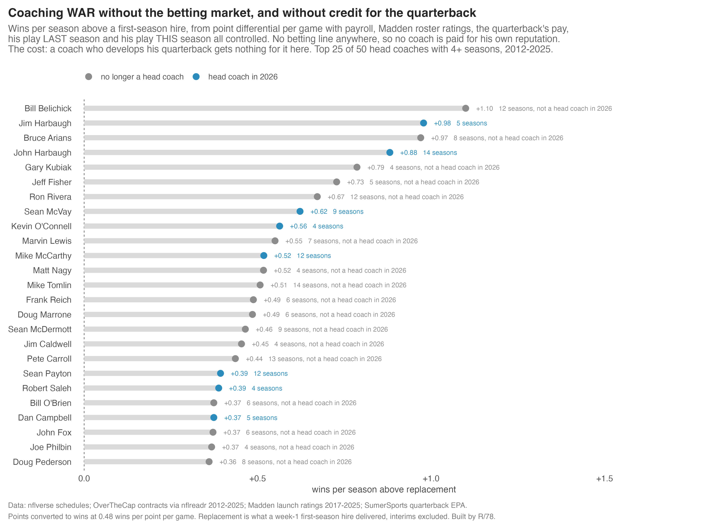
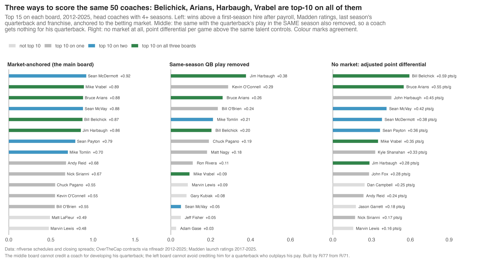
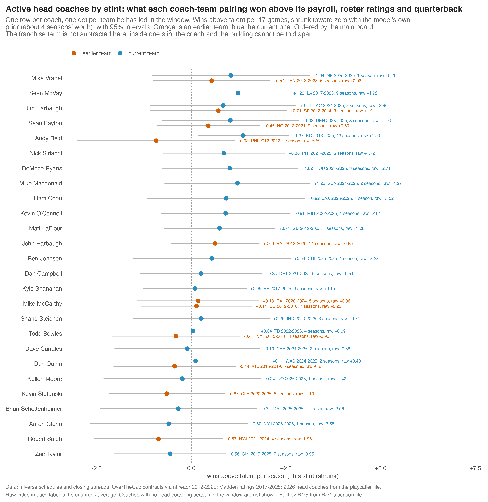

Grading the head coaches
A GPA for every head coach on a sideline this season, from seven things the data can actually measure. Then the wins-above-replacement line underneath it, three ways, and what the skeptics did to it.
The 2026 head coaches, graded
Seven lines, a letter each, a GPA out of 4.0. Graded against every coach of the era, not just the ones still working, so an A means the same thing every year. Click a header to sort.
| # | Coach | Team | Class | 4th downs | Two-point | Penalties | Offense | Defense | Beats spread | Results | GPA | Tier |
|---|---|---|---|---|---|---|---|---|---|---|---|---|
| 1 | Mike Macdonald | SEA | Freshman (2) | B | Inc | C | Inc | Inc | A | A | 3.25 | Honor roll |
| 2 | Nick Sirianni | PHI | Upperclassman (5) | A | Inc | C | A | B | A | C | 3.17 | Honor roll |
| 3 | John Harbaugh | NYG | Upperclassman (14) | A | C | D | A | A | B | A | 3.14 | Honor roll |
| 4 | Sean McVay | LA | Upperclassman (9) | F | C | A | B | A | A | A | 3.00 | Honor roll |
| 5 | Dan Campbell | DET | Upperclassman (5) | B | Inc | A | B | F | A | B | 2.83 | Honor roll |
| 6 | Shane Steichen | IND | Sophomore (3) | C | Inc | B | B | B | B | B | 2.83 | Honor roll |
| 7 | Jim Harbaugh | LAC | Upperclassman (5) | F | Inc | B | Inc | Inc | A | A | 2.75 | Honor roll |
| 8 | Andy Reid | KC | Upperclassman (14) | D | C | A | A | C | A | C | 2.71 | Honor roll |
| 9 | Mike McCarthy | PIT | Upperclassman (12) | B | C | C | B | C | B | A | 2.71 | Honor roll |
| 10 | Sean Payton | DEN | Upperclassman (12) | F | C | B | A | B | A | B | 2.71 | Honor roll |
| 11 | Kyle Shanahan | SF | Upperclassman (9) | B | C | B | A | B | C | D | 2.57 | Passing |
| 12 | Matt LaFleur | GB | Upperclassman (7) | A | C | C | A | D | A | D | 2.57 | Passing |
| 13 | Mike Vrabel | NE | Upperclassman (7) | B | C | D | B | C | A | C | 2.43 | Passing |
| 14 | DeMeco Ryans | HOU | Sophomore (3) | F | Inc | C | F | A | A | A | 2.33 | Passing |
| 15 | Dave Canales | CAR | Freshman (2) | A | Inc | D | Inc | Inc | B | F | 2.00 | Passing |
| 16 | Kevin O'Connell | MIN | Sophomore (4) | F | Inc | F | F | A | A | A | 2.00 | Passing |
| 17 | Todd Bowles | TB | Upperclassman (8) | D | C | B | B | B | D | D | 2.00 | Passing |
| 18 | Kevin Stefanski | ATL | Upperclassman (6) | B | C | F | F | C | C | B | 1.71 | Probation |
| 19 | Dan Quinn | WAS | Upperclassman (7) | C | C | D | B | F | B | F | 1.57 | Probation |
| 20 | Robert Saleh | TEN | Sophomore (4) | B | C | F | F | C | F | B | 1.43 | Probation |
| 21 | Zac Taylor | CIN | Upperclassman (7) | C | C | B | C | F | D | F | 1.43 | Probation |
| Aaron Glenn | NYJ | Freshman (1) | Inc | Inc | Inc | Inc | Inc | D | D | Inc | Incomplete | |
| Ben Johnson | CHI | Freshman (1) | Inc | Inc | Inc | Inc | Inc | A | D | Inc | Incomplete | |
| Brian Schottenheimer | DAL | Freshman (1) | Inc | Inc | Inc | Inc | Inc | C | F | Inc | Incomplete | |
| Kellen Moore | NO | Freshman (1) | Inc | Inc | Inc | Inc | Inc | C | C | Inc | Incomplete | |
| Liam Coen | JAX | Freshman (1) | Inc | Inc | Inc | Inc | Inc | A | A | Inc | Incomplete |
The lines. 4th downs: win-probability cost of his fourth-down choices against the league in his own seasons (2018-2025). Two-point: how often he goes for two when the chart says to. Penalties: penalty rate beyond what the situation predicts. Offense and Defense: EPA per play above the talent controls. Beats spread: wins beyond the closing line, shrunk. Results: the market-free WAR below, which is point differential above payroll, roster ratings and the quarterback. Roster ratings are Madden's, and they are launch ratings: EA's public feed only serves the current week, and no archive of in-season ratings exists, so a roster that gets healthy or falls apart mid-season is not visible here. A is the top fifth of the era, F the bottom fifth; Inc is a line he has too little of. A GPA needs four lines, so the five coaches in their first season have none yet. Class is seasons as a head coach since 2012: freshman 1-2, sophomore 3-4, upperclassman 5+.
Why only active coaches. A fired coach still sets the curve but is off the list. The first version of this card had Sean McDermott on top and Buffalo had already replaced him.

Taking the market's opinion of the coach back out
The market board was paying coaches for their own reputation, so it is no longer the headline. It splits into two halves: what the betting line rated the team above its roster, and what the team did beyond that line. The first half is where the market's opinion of the coach lives. It was 58% of Sean McDermott's number, 85% of Sean McVay's and 92% of Bill Belichick's. That board ranked McDermott first, and Buffalo replaced him for 2026; four of its top ten are not head coaches this season.

What replaces it. The two boards that do not pay a coach for his reputation: one that also removes the quarterback's play in the same season (a coach gets nothing for his passer, and the whole scale collapses to +0.38 at the top), and one that drops the betting line entirely and scores point differential above payroll, roster ratings and the quarterback's pay. Neither is the truth on its own: the first cannot credit a coach for developing a quarterback, the second cannot see anything that does not show up in points. Where they agree is the safest thing this data says: Arians, Belichick and Jim Harbaugh, then Vrabel and McVay. McDermott lands 7th.

And both objections in one model. Point differential, no market, with the quarterback's same-season play in the controls: Belichick +1.10, Jim Harbaugh +0.98, Arians +0.97, John Harbaugh +0.88. Its own failure mode is visible too, and worth stating: taking the quarterback out entirely lifts coaches whose teams played better than their passers, which is how Jeff Fisher lands 6th and Doug Marrone 15th on that version.

The three boards side by side, with the market version kept for comparison:

The familiar names are on top. None of them is clear of the pack.
Over 2012-2025, on the two measures that do not pay a coach for the betting market's opinion of him, the head coaches who won the most above their resources are Bruce Arians, Bill Belichick and Jim Harbaugh, then Mike Vrabel and Sean McVay. The honest part: nobody's lower bound clears zero, the number does not predict next season better than last season's win total does, and a coach cannot be cleanly separated from his quarterback. This measures who won above their resources. It cannot prove the man, rather than the man plus quarterback plus building, is why.
Wins above a first-season hire
Expected wins. The closing point spreads on a team's games imply the wins the betting market expected. The part of that expectation explained by payroll (top 25 contracts as a share of the cap), the roster's Madden ratings (top-25 average, from 2017 when the ratings begin), the starting quarterback's cap share, and his EPA per dropback the season before is called talent. It explains 44% of the market's expectation. Actual wins minus talent is wins above talent, scaled to 17 games.
The coach's share. A mixed model of wins above talent with three random terms: coach, franchise, season. The franchise term absorbs the owner, the front office and whatever outlasts the man. The coach term is shrunk toward zero, hardest for short careers.
Replacement level is measured, not assumed: what week-1 first-season head coaches actually delivered, net of franchise and season, on 99 such seasons. It comes out at -0.07 wins against the average sitting coach (SE 0.25). Interims are excluded (they average -0.91). Because the line is near zero, WAR and wins above average are almost the same thing here.
What is and is not controlled. Payroll, Madden roster ratings where they exist, the quarterback's pay and his previous season, the building. Not controlled: the quarterback's play in the same season. That is the biggest hole. Same-season QB play explains 38% of wins above talent on its own. Put it in as a control and 22 of 50 coaches move 10 or more places (Andy Reid 9th to 39th, Jim Harbaugh 6th to 1st). The table carries that rank beside the main one.
Madden. Madden ratings are part of the talent control from 2017 on, the first year they exist; before that the control is payroll and quarterback only. They catch roster quality that payroll misses: worth +0.86 wins per standard deviation in the talent fit, and once in, the leftover Madden signal in the coach number is +0.07 (t = 0.4). The cost is that coaches are graded on two slightly different scales across the window. Without Madden the board had Belichick 1st at +1.13 and John Harbaugh 8th; with it Belichick is 5th at +0.87 and Harbaugh 17th. Everyone else moved a few places at most (rank correlation 0.98).
Fifty head coaches with at least four seasons, 2012-2025

The annotated version, with raw averages, the reliability-supported scale and every sensitivity in the label

Click a column header to sort. "Seasons" counts seasons in the 2012-2025 window. "QB-controlled rank" is the rank once same-season quarterback play is also removed. "P(above avg)" is the chance the coach's true effect is above the average sitting coach; nobody reaches 0.95. The 56 coaches with fewer than four seasons are in the CSV without a rank. The bottom of this board is the worst of the survivors, not the worst coaches: WAR correlates 0.52 with seasons coached among the eligible.
| Rank | Coach | Seasons (teams) | Mean rank | Market-free WAR | QB-removed rank | Point-diff rank | Market WAR | Market rank | Reputation part |
|---|---|---|---|---|---|---|---|---|---|
| 1 | Bruce Arians | 8 (ARI/TB) | 2.5 | +0.97 | 3 | 2 | +0.88 | 3 | +0.46 |
| 2 | Bill Belichick | 12 (NE) | 3.5 | +1.10 | 6 | 1 | +0.87 | 5 | +0.88 |
| 3 | Jim Harbaugh | 5 (SF/LAC) | 5.0 | +0.98 | 1 | 9 | +0.86 | 6 | +0.64 |
| 4 | Mike Vrabel | 7 (TEN/NE) | 8.5 | +0.31 | 10 | 7 | +0.89 | 2 | +0.29 |
| 5 | Sean McVay | 9 (LA) | 8.5 | +0.62 | 13 | 4 | +0.88 | 4 | +0.79 |
| 6 | Mike Tomlin | 14 (PIT) | 10.5 | +0.51 | 5 | 16 | +0.70 | 8 | +0.20 |
| 7 | Sean McDermott | 9 (BUF) | 11.0 | +0.46 | 17 | 5 | +0.92 | 1 | +0.48 |
| 8 | John Harbaugh | 14 (BAL) | 11.5 | +0.88 | 20 | 3 | +0.46 | 17 | +0.41 |
| 9 | Bill O'Brien | 6 (HOU) | 13.0 | +0.37 | 4 | 22 | +0.55 | 13 | +0.22 |
| 10 | Marvin Lewis | 7 (CIN) | 13.0 | +0.55 | 11 | 15 | +0.48 | 15 | +0.22 |
| 11 | Ron Rivera | 12 (CAR/WAS) | 13.0 | +0.67 | 9 | 17 | +0.30 | 22 | +0.08 |
| 12 | Sean Payton | 12 (NO/DEN) | 13.5 | +0.39 | 21 | 6 | +0.79 | 7 | +0.33 |
| 13 | Kevin O'Connell | 4 (MIN) | 14.5 | +0.56 | 2 | 27 | +0.55 | 12 | +0.08 |
| 14 | Nick Sirianni | 5 (PHI) | 16.5 | +0.30 | 19 | 14 | +0.67 | 10 | +0.31 |
| 15 | Jim Caldwell | 4 (DET) | 17.0 | +0.45 | 16 | 18 | +0.45 | 18 | +0.13 |
| 16 | Jason Garrett | 8 (DAL) | 17.5 | +0.24 | 22 | 13 | +0.44 | 19 | +0.32 |
| 17 | Matt Nagy | 4 (CHI) | 19.0 | +0.52 | 8 | 30 | +0.35 | 20 | +0.08 |
| 18 | Gary Kubiak | 4 (HOU/DEN) | 20.0 | +0.79 | 12 | 28 | +0.21 | 25 | +0.32 |
| 19 | Chuck Pagano | 6 (IND) | 22.0 | +0.05 | 7 | 37 | +0.55 | 11 | +0.07 |
| 20 | Pete Carroll | 13 (SEA/LV) | 22.0 | +0.44 | 24 | 20 | +0.47 | 16 | +0.38 |
| 21 | Dan Campbell | 5 (DET) | 24.5 | +0.37 | 38 | 11 | +0.34 | 21 | -0.11 |
| 22 | Kyle Shanahan | 9 (SF) | 25.0 | +0.22 | 42 | 8 | +0.25 | 23 | +0.30 |
| 23 | Andy Reid | 14 (PHI/KC) | 25.5 | +0.30 | 39 | 12 | +0.68 | 9 | +0.33 |
| 24 | John Fox | 6 (DEN/CHI) | 26.5 | +0.37 | 43 | 10 | +0.18 | 28 | +0.10 |
| 25 | Matt LaFleur | 7 (GB) | 27.5 | +0.21 | 36 | 19 | +0.49 | 14 | +0.05 |
| 26 | Frank Reich | 6 (IND/CAR) | 28.5 | +0.49 | 26 | 31 | -0.04 | 32 | +0.13 |
| 27 | Mike Zimmer | 8 (MIN) | 28.5 | +0.33 | 33 | 24 | +0.20 | 27 | +0.06 |
| 28 | Robert Saleh | 4 (NYJ) | 29.5 | +0.39 | 23 | 36 | -0.25 | 43 | -0.18 |
| 29 | Jeff Fisher | 5 (LA) | 30.0 | +0.73 | 14 | 46 | -0.37 | 46 | -0.55 |
| 30 | Mike McCarthy | 12 (GB/DAL) | 30.0 | +0.52 | 34 | 26 | +0.21 | 24 | +0.17 |
| 31 | Joe Philbin | 4 (MIA) | 30.5 | +0.37 | 28 | 33 | -0.06 | 36 | +0.06 |
| 32 | Todd Bowles | 8 (NYJ/TB) | 31.0 | +0.21 | 30 | 32 | +0.16 | 29 | +0.19 |
| 33 | Tom Coughlin | 4 (NYG) | 31.0 | +0.31 | 41 | 21 | -0.07 | 37 | +0.01 |
| 34 | Kliff Kingsbury | 4 (ARI) | 32.0 | +0.26 | 35 | 29 | -0.05 | 33 | +0.03 |
| 35 | Adam Gase | 5 (MIA/NYJ) | 32.5 | +0.13 | 15 | 50 | -0.11 | 38 | -0.56 |
| 36 | Anthony Lynn | 4 (LAC) | 32.5 | +0.17 | 40 | 25 | +0.20 | 26 | +0.36 |
| 37 | Kevin Stefanski | 6 (CLE) | 32.5 | +0.36 | 18 | 47 | -0.06 | 35 | -0.25 |
| 38 | Brian Daboll | 4 (NYG) | 33.0 | +0.12 | 27 | 39 | -0.05 | 34 | -0.15 |
| 39 | Rex Ryan | 5 (NYJ/BUF) | 33.0 | +0.28 | 25 | 41 | -0.13 | 39 | -0.12 |
| 40 | Chip Kelly | 4 (PHI/SF) | 34.5 | +0.08 | 29 | 40 | -0.00 | 31 | +0.22 |
| 41 | Dan Quinn | 7 (ATL/WAS) | 36.0 | -0.03 | 49 | 23 | +0.03 | 30 | -0.12 |
| 42 | Doug Marrone | 6 (BUF/JAX) | 36.5 | +0.49 | 31 | 42 | -0.37 | 48 | -0.29 |
| 43 | Doug Pederson | 8 (PHI/JAX) | 39.5 | +0.36 | 45 | 34 | -0.24 | 42 | -0.30 |
| 44 | Lovie Smith | 4 (CHI/TB/HOU) | 40.0 | +0.29 | 32 | 48 | -0.35 | 45 | -0.16 |
| 45 | Gus Bradley | 4 (JAX) | 41.0 | +0.07 | 37 | 45 | -0.55 | 49 | -0.40 |
| 46 | Mike McCoy | 4 (LAC) | 42.5 | +0.08 | 50 | 35 | -0.37 | 47 | -0.36 |
| 47 | Mike McDaniel | 4 (MIA) | 43.0 | -0.02 | 48 | 38 | -0.18 | 40 | -0.19 |
| 48 | Jay Gruden | 5 (WAS) | 44.0 | -0.04 | 44 | 44 | -0.19 | 41 | -0.42 |
| 49 | Zac Taylor | 7 (CIN) | 44.5 | +0.11 | 46 | 43 | -0.26 | 44 | -0.22 |
| 50 | Dennis Allen | 5 (LV/NO) | 48.0 | -0.03 | 47 | 49 | -0.59 | 50 | -0.37 |
The 32 coaches on a sideline this season
The market-free measure, filtered to the 2026 week-1 head coaches. Jim Harbaugh leads at +0.98, then John Harbaugh +0.88, and two coaches too new to grade properly sit high on thin evidence: Macdonald (+0.83 on two seasons) and Coen (+0.80 on one). Among the established: McVay +0.62, O'Connell +0.56, McCarthy +0.52, Payton +0.39, Vrabel +0.31, Reid +0.30, Shanahan +0.22. Fourteen of the 32 have under four seasons in the window, so their number is mostly the prior; six have never been a head coach in it.

By stint, because the model says the effect is a pairing. The main number pools every season a coach has had, so Vrabel's seven seasons are six in Tennessee and one in New England, Payton's twelve are nine in New Orleans and three in Denver. Split by team and shrunk with the model's own prior (about four seasons' worth): Vrabel was +0.54 a season in Tennessee and his one New England season, raw +6.3, shrinks to +1.04. Payton was +0.45 in New Orleans, +1.03 in Denver. Reid's one Philadelphia season in the window was -5.6 raw; Kansas City is +1.37 over thirteen. Jim Harbaugh: +0.71 in San Francisco, +0.84 with the Chargers. McCarthy: +0.14 in Green Bay, +0.18 in Dallas. Bowles: -0.41 with the Jets, +0.04 in Tampa. Inside one stint the coach and the building cannot be told apart, so the franchise term is not subtracted here.

Three rounds, forty objections, and the board did not move
Three reviewers, each with a different job (survivorship, statistical practice, confounds), took three passes at it. Most objections were right. The fixes were made, the top of the board stayed put, and every claim around it got narrower. What survived, and what did not:
Nobody is clear of replacement. The first bootstrap was too tight. Redone properly, P(above average) for the top five is 0.88 to 0.90 and nobody reaches 0.95.
The number is not yet reliable. The coach rank across odd and even seasons correlates 0.09, under the project's own 0.30 gate. The coach spread that sets the scale is 0.81 wins on all seasons, 0.67 on odd seasons and 1.27 on even ones. Held at the 0.40 the reliability supports, the order barely changes (rank correlation 0.99) but every number shrinks by about half.
It does not predict. Fit on earlier seasons, WAR predicts the next season's wins above talent at r = 0.08; last season's raw win total does it at r = 0.11, and WAR adds nothing once that is in the model (p = 0.56).
It is a pairing, not a man. The part of a coach's effect that travels with him across teams is essentially zero; the coach-within-team part is 1.16 wins. The annotated chart above carries, for every coach it moves by more than 0.3, the number without his single most influential season and without his elite-quarterback seasons.
Tenure cannot be called earned. Coaches who lasted 5+ seasons were +3.4 wins better in years 1-2 than coaches gone within two. A simulated league with no coaching skill and owners who fire on wins produces most of that gap (median +2.1), so the claim was withdrawn.
Replacement level is soft. First-time head coaches average +0.21, second-job coaches -0.65; the line drifts 0.16 wins between halves of the window. Neither changes the order (rank correlation 0.99 either way).
Cheap quarterbacks count for the coach. 45 of 451 coach-seasons have a starter paid below average and playing above it; they average +2.7 wins above talent. Without them Vrabel is +0.41 and McVay +0.45.